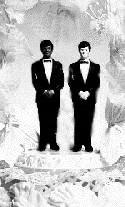

Partners Task Force
for Gay & Lesbian Couples
Box 9685
Seattle, WA 98109-0685
206-935-1206
demian@buddybuddy.com
www.buddybuddy.com

 |
Although same-sex marriage has at times been commonplace in other parts of the world, church weddings for gay and lesbian couples are a recent phenomenon in America. No national church acted sooner to encourage same-sex unions than the Metropolitan Community Church, which was founded to primarily serve the gay community. MCC’s founder, Rev. Troy Perry, conducted what was probably this nation’s first church ceremony for same-sex partners on December 3, 1968, in Los Angeles.
Since then, a growing number of mainstream churches and synagogues have begun performing ceremonies of same-sex marriage, union or covenants. Unitarian Universalists led the way on June 26, 1984, when their general assembly approved union services for same-sex couples. In 1996, the Reconstructionist Jewish Rabbinical Association endorsed same-sex marriage. In addition, marriage or blessing rites are increasingly available within individual congregations.
If you want to be married in a church or synagogue, consult the minister or rabbi where you worship, or call local congregations with a record of acceptance. In most cases, you’ll be asked to undergo counseling sessions intended to prepare couples for the marriage commitment.
If you encounter resistance, you may want to share with your congregation the statements from the church groups listed below.
While marriage ceremonies are powerful social and familial events, they do not in any way give any of the more than 150-350 rights and responsibilities of legal marriage offered by each state — nor of the more than a thousand rights built into federal laws that are triggered by legal marriage.
A Quick List of U.S. Religious Denominations that have
Endorsed or Held Ceremonies for Same-Sex Couples
Individual congregations may vary.
American Apostolic Catholic Church
American Baptist
Bretheren/Mennonite
Buddhist
California Council of Churches
Catholic Apostolic Church in North America (CACINA)
Covenant of the Goddess (Wiccan)
Episcopal Church
Evangelican Anglican Church in America
Evangelical Lutheran
(The Greater Milwaukee Synod became the first ELCA synod to endorse blessing same-sex unions in 2000)
Hawaii Council of Churches
Humanist Society of Friends
Reconciling Congregations (United Methodist)
Reconstructionist Jewish
Reformed Catholic Church (USA)
Reform Judaism
(Central Conference of American Rabbis affirms the legalization of same-sex marriage)
Methodist
Metropolitan Community Church
Orthodox Catholic Church
Presbyterian Church
(affirms the legalization of same-sex marriage)
Quaker (Society of Friends)
Unitarian Universalist Church
United Church of Christ
(As of April 2000, 321 of its 6,100 congregations have declared they welcome gay men & lesbians)
Unity Fellowship Churches
Universal Life Church
|
Religious Organizations Actively Supporting
Ceremonies for Same-Sex Couples
Affirmation (United Methodists for Lesbian, Gay, Bisexual and Transgender Concerns) has created the Covenant Relationships Network (CORNET). Cornet seeks to continue the tradition of hosting worship services that celebrate and witness to same-sex “covenant relationships” in United Methodist churches. They maintain lists of clergy and laity committed to the ministry of covenant services, and are campaigning to change the United Methodist Church’s official position on homosexuality.
Cornet
Box 1021, Evanston, IL 60204
847-733-9590 (voice-mail)
umcornet@hotmail.com
www.umaffirm.org/cornet
Dignity (Catholic-based) supports same-sex relationships and marriages through social and spiritually focused activities at the local level, offering Guidelines for Holy Union services, and maintains a National Registry of Couples whose relationships have been blessed by Dignity clergy.
Dignity / USA National Office
1500 Massachusetts Ave. N.W., #11, Washington, D.C. 20005
800-877-8797; 202-861-0017; fax 202-429-9808
dignity@aol.com
www.dignityusa.org
Couples’ Ministry Resource Guide
The Unitarian Universalists have maintained an Office for Lesbian & Gay Concerns at its headquarters in Boston since 1976. It remains one of the most affirming religious bodies in North America today in its outreach and celebration of gay and lesbian people.
Office of Gay, Lesbian, Bisexual & Transgender Concerns
Unitarian Universalist Association of Congregations
25 Beacon St., Boston, MA 02108
617-742-2100
obgltc@uua.org
www.uua.org/obgltc
|
Ceremonial Marriage Resources
|